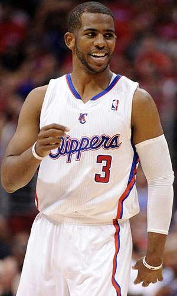

|  |
Матчи |
82 |
|
Передачи (всего/среднее) |
838 |
10.2 |
| В основе |
82 |
|
Подборы в защите (всего/среднее) |
324 |
4 |
| Время (всего/среднее) |
2857:15 |
34:51 |
Подборы в атаке (всего/среднее) |
52 |
0.6 |
| Очки (всего/среднее) |
1564 |
19.1 |
Подборы (всего/среднее) |
376 |
4.6 |
| 2-очковые броски (всего/среднее) |
429/821 |
5.2/10 |
Перехваты (всего/среднее) |
156 |
1.9 |
| 2-очковые броски (% реализации) |
52.3%% |
|
Потери (всего/среднее) |
190 |
2.3 |
| 3-очковые броски (всего/среднее) |
39/350 |
1.7/4.3 |
Блокшоты (всего/среднее) |
15 |
0.2 |
| 3-очковые броски (% реализации) |
39.7% |
|
Блокшоты соперника (всего/среднее) |
21 |
0.3 |
| Штрафные броски (всего/среднее) |
289/321 |
3.5/3.9 |
Фолы (всего/среднее) |
203 |
2.5 |
| Крис Пол |
Штрафные броски (% реализации) |
90% |
|
Коэффициент полезности (всего/среднее) |
1900 |
23.2 |